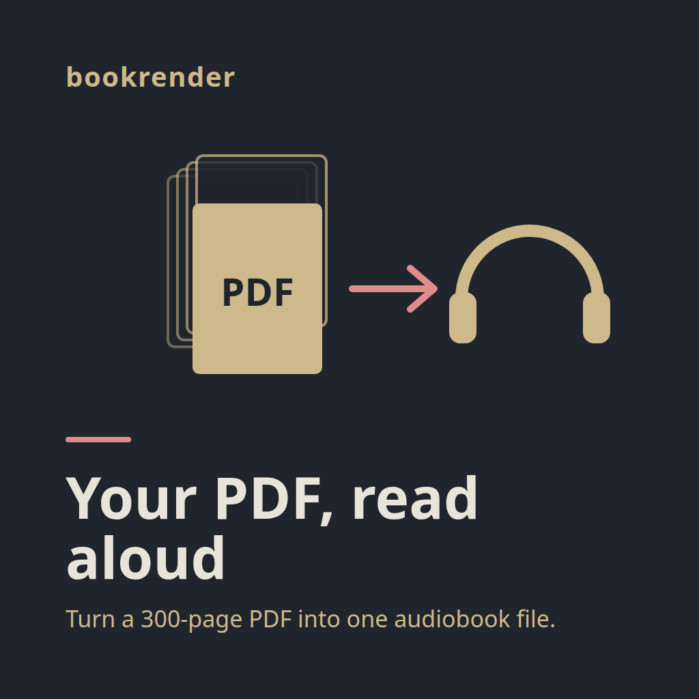

Open in new tab to save progress and follow links.
Product read
bookrender: hold the ads until the product ships
“Turn any long PDF into a narrated audiobook you can play offline.”
The plan is written for people with long PDFs who would rather listen than read. Only adult Free and Go users see ChatGPT ads. Plus and Pro users never do Testing ads in ChatGPTopenai.com · official.
Verdict: do not advertise yet. Spend nothing until these three blockers are cleared.
The promise is not in the code. The repo ships a 3D book-club app with signup and clubs. Nothing reads PDFs, makes speech or plays audio offline (repo-derived: no such code in web/src, api/src or shared/src). Every ad is policy-reviewed before it serves Campaign managementdevelopers.openai.com · official.
There is no live URL. OpenAI's crawlers must reach the landing page for review Ads docsdevelopers.openai.com · official.
120 USD buys about 40 clicks. That predicts 0.1 to 0.2 signups at a 0.37% conversion rate 1,900-site studysearchengineland.com · third-party.
Until then, organic citation is the better spend. ChatGPT answers “PDF to audiobook offline” from public pages such as AlternativeTo listingsalternativeto.net · third-party.
If the read is wrong, rerun with a corrected positioning. To advertise what the repo ships today:
/usr/bin/node --no-warnings=ExperimentalWarning /home/alex/Desktop/dev/modpipes/dist/cli/src/main.js start b9afa7ec-8375-40a9-bb31-cd7aefffa6cf --var repo-path=/home/alex/Desktop/dev/bookrender --var positioning="A 3D book-club app where you browse, join and start reading clubs with friends."
If the PDF-to-audiobook product lives in another repo, run the same command with --var repo-path=<that repo> and keep the positioning: --var positioning="Turn any long PDF into a narrated audiobook you can play offline."
Audience and conversations
Run two ad groups: A and C
Ads target the conversation, not the person. Context hints are free-text situations, up to 2,000 per ad group. They guide relevance but never guarantee placement Campaign targetingdevelopers.openai.com · official.
About 40 clicks cannot be split further. Copy that matches the user's situation beat search-style copy in six months of agency tests DEPTdept.global · third-party.
A · I have a PDF and want to hear it
turn a 300-page PDF I downloaded into an audiobook for my phone
convert a PDF ebook that has no audiobook edition into audio
make an MP3 or M4B from a PDF I own so I can play it in any player
I want chapters in the audio file so I can skip around, not one giant track
hear a long PDF read aloud instead of staring at the screen
my publisher only sent a PDF and I would rather listen to it
free ways to read a PDF aloud, and what I give up with free tools
save a PDF as audio so I can listen on a plane
C · Offline playback
read-aloud that keeps working in airplane mode
download audio of my documents before a flight
no signal in the subway tunnel but I still want to listen
I am on a limited data plan and do not want to stream voices
audio that stays on my phone after I cancel a subscription
text to speech that does not need an internet connection
trip with patchy connectivity, need my study material as audio
Parked groups B, D, E and F
B · Listening while doing something else. Parked until the budget reaches 350 USD.
D · Accessibility and study. Parked: scanned-PDF and column handling are not built.
E · Comparing tools and prices. Parked: there is no pricing to compare yet.
F · Privacy and rights. Parked: rights-sensitive, so get a policy check first.
Ads sometimes appear on unrelated topics MediaPostmediapost.com · third-party. The hints come from third-party how-to and review pages, not from real user quotes.
Creatives
Use c1 and c3 for the test
One ad per active group. Limits from facts.json, as of 2026-11-06: title up to 50 characters, aim for 16–24; body up to 100, aim for 32–48. Square image 1024 px, allowed 640–1200Ads docsdevelopers.openai.com · official.
Copy must describe only what the deployed site does. Every ad is reviewed before it serves Campaign managementdevelopers.openai.com · official.

Group A · run in test
Your PDF, read aloud
Turn a 300-page PDF into one audiobook file.
Title 20/50 · Body 44/100 · both in target
turn a 300-page PDF I downloaded into an audiobook for my phone
convert a PDF ebook that has no audiobook edition into audio
hear a long PDF read aloud instead of staring at the screen
my publisher only sent a PDF and I would rather listen to it
120 ÷ 25 = 4.8 days, so plan 4 days and about 100 USD.
Pause by hand at
110 USD
The daily budget is a 7-day average. One day can reach 2 × 25 = 50 USD (same source).
Max bid per click
3.00 USD
Set bidding_type to clicks with a fixed max_bid_micros. Bids can be on impressions, clicks or conversions, each fixed or Maximize Bidding and budgetsdevelopers.openai.com · official.
Conversion bidding needs one active standard conversion event and has nothing to learn from at about 0.15 conversions Conversion-optimized campaignsdevelopers.openai.com · official.
The cap keeps the budget out of the 8 to 13 USD-per-click tail Localogylocalogy.com · third-party.
3 USD is the low end of the reported 3 to 5 USD starting bid Lapistrylapis.com · third-party. If impressions stay under 300 a day, raise it once to 4 USD.
Signups assume 0.37% conversion 1,900-site studysearchengineland.com · third-party. This test can measure CTR, CPC and tracking. It cannot measure conversion. A two-week test at the minimum costs 350 USD.
ChatGPT ad clicks often lose the referrer and look like direct traffic. One test saw paid clicks and none in analytics Out of the Box Advisorsoutoftheboxadvisors.com · third-partyStapestape.io · third-party.
Kill criteria and review date
Review on day 14 after approval
The clock starts at ad approval, day 0. Spend runs on days 1 to 4. Day 14 gives late signups time to attribute within the fixed 30-day window Conversion-optimized campaignsdevelopers.openai.com · official.
Example: approval on 2026-12-01 means the review is on 2026-12-15.
Day 2 · tracking gatePause if tracked /listen sessions are under 50% of platform clicks.Fix tracking before spending more Out of the Boxoutoftheboxadvisors.com · third-party
Daily · spend capPause at 110 to 120 USD cumulative, whatever the results.One day can spend double Daily budgetshelp.openai.com · official
Day 14 · killCTR under 0.3% after 1,000 impressions, or average CPC over 8 USD with fewer than 2 signups, or under 10% of visitors start a conversion.Lapistrylapis.com · third-partyLocalogylocalogy.com · third-partycaseyrbcaseyrb.com · third-party
Day 14 · continueCTR at least 0.7%, CPC at most 5 USD, tracked sessions at least 80% of clicks, 10% start a conversion.Then fund a 14-day test at 25 USD a day, 350 USD, and kill at 0 signups after 100 tracked clicks Stubgroupstubgroup.com · third-party.
Zero signups from about 40 clicks is not a kill signal on its own: 0.15 is the expected count. Zero was the most common outcome in small tests adlibraryadlibrary.com · third-party. Change one thing, the /listen copy or the hints, before the next test.